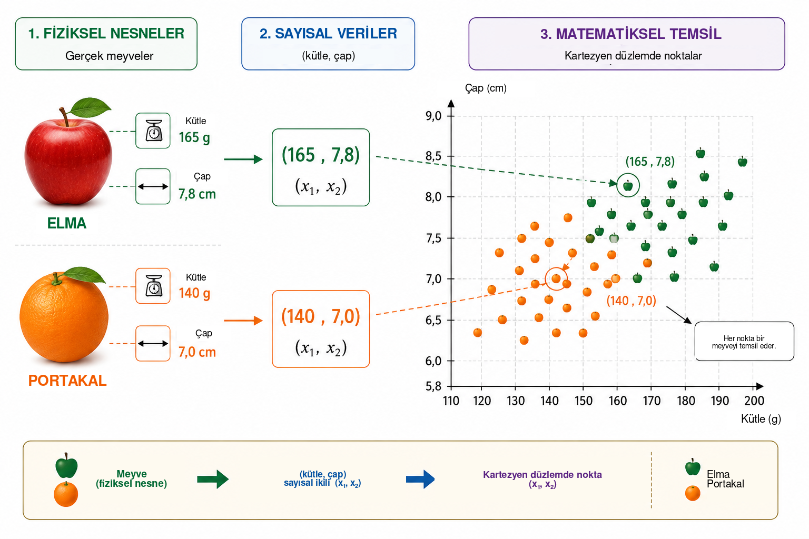
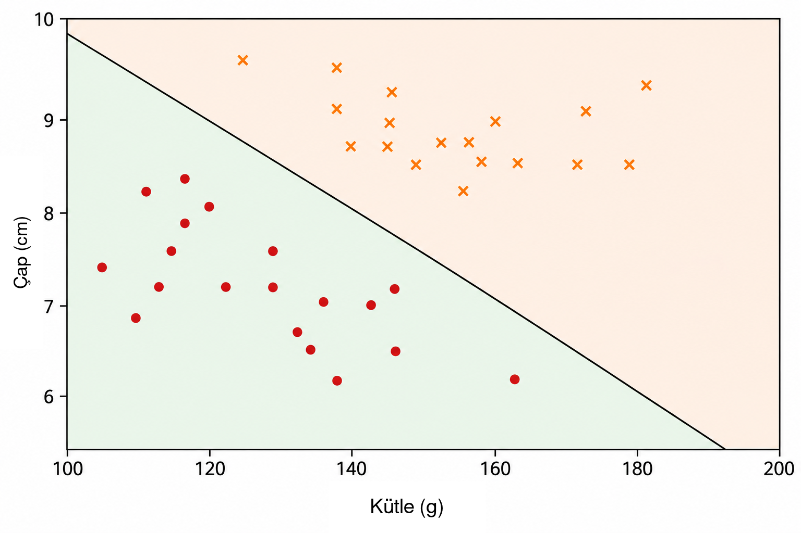
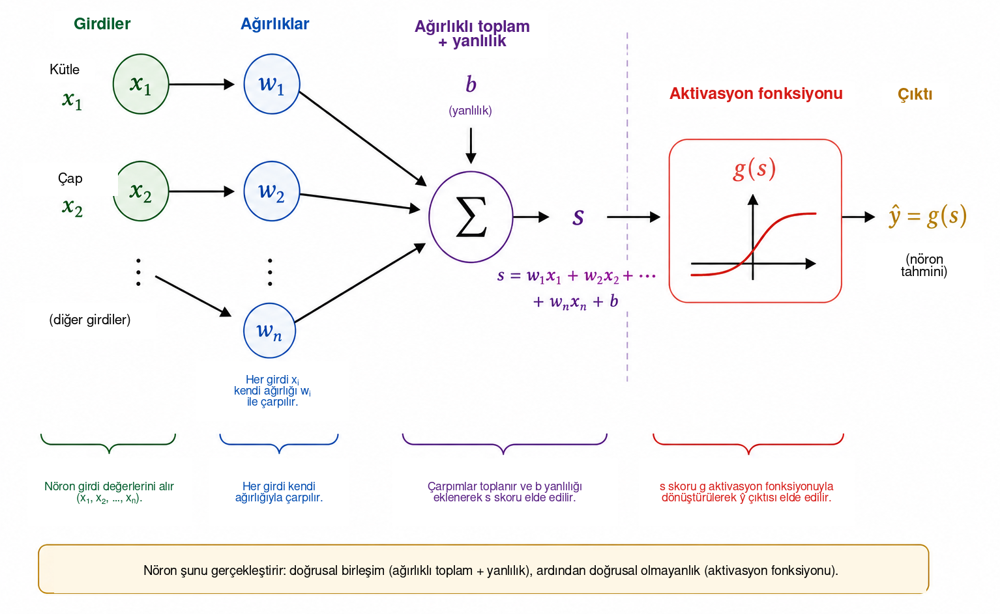
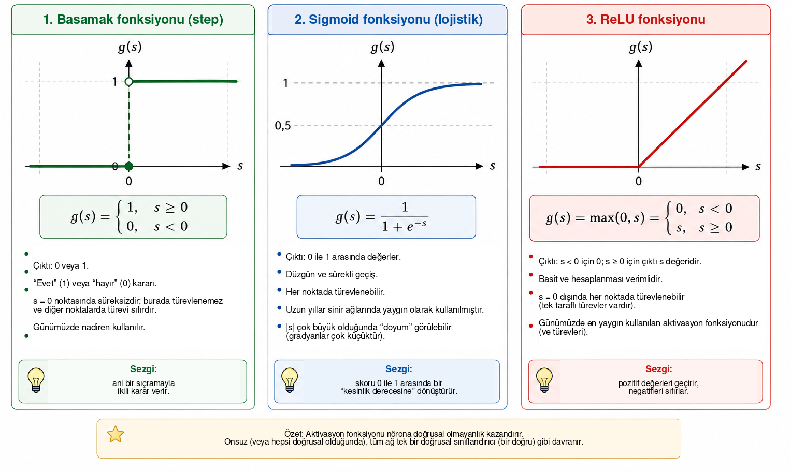
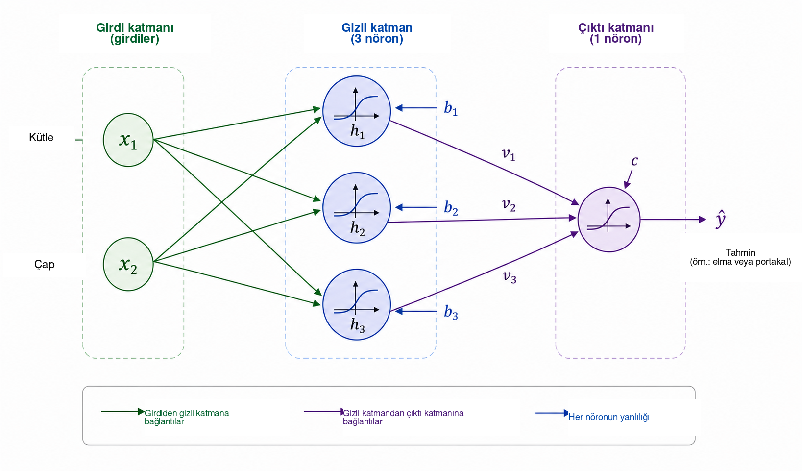
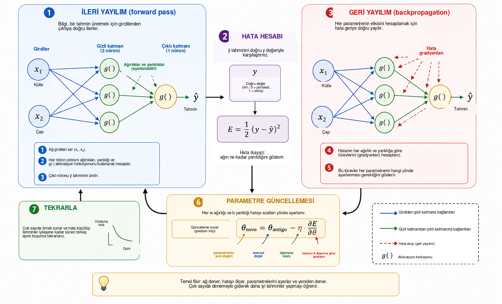
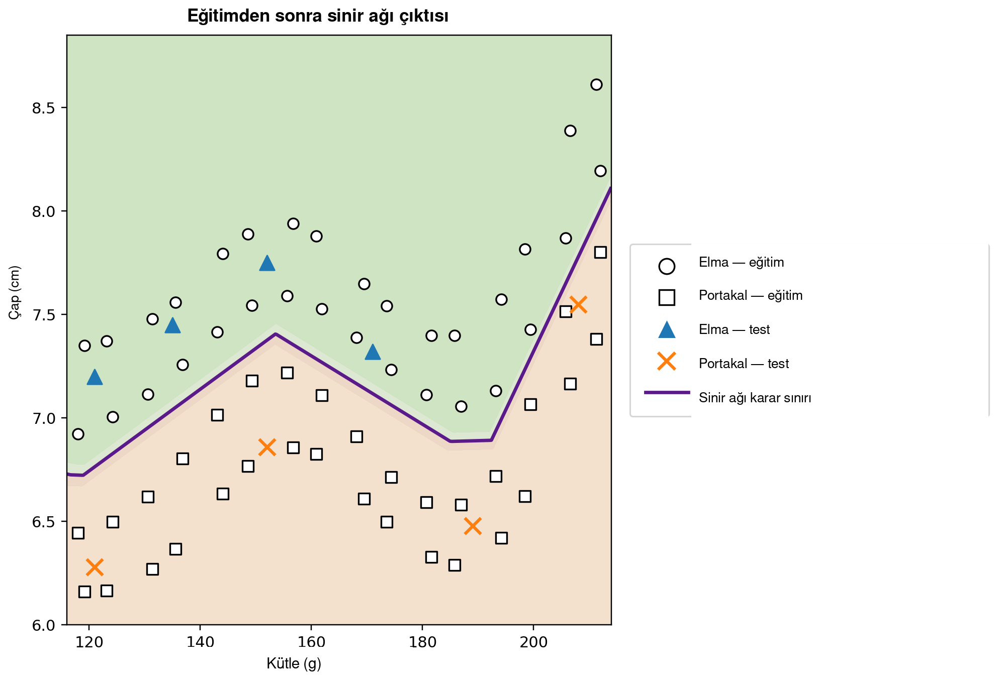

Bir bilgisayar ne zaman öğrenebilir?
Günlük yaşamda, çoğu zaman farkına bile varmadan sınıflandırma kararları veririz. Bir meyveye bakarak onun elma mı yoksa portakal mı olduğunu hızla ayırt ederiz; telefona bir mesaj geldiğinde gerçek bir konuşmayı istenmeyen reklamlardan ayırırız; tıbbi analizlerde bir kararı desteklemek için birden çok ölçüm birlikte değerlendirilebilir; finans kuruluşlarında ise kredi verilmeden önce çeşitli bilgiler incelenir. Tüm bu örneklerde bir yanıt üretmek için birden fazla özellik birlikte ele alınır.
Birçok geleneksel bilgisayar programında bu yanıtı üreten kurallar programcı tarafından açıkça yazılır. Kurallar biliniyor ve açık bir biçimde ifade edilebiliyorsa bu yaklaşım iyi çalışır. Veriler çok değişkense ya da iyi bir karar için gerekli tüm koşulları önceden formüle etmek zorsa daha az etkili olur. Bu durum doğal bir soruya yol açar:
Karar kuralını önceden almak yerine örneklerden öğrenen bir program oluşturabilir miyiz?
Bu, verilerden model uyarlayan yöntemleri inceleyen yapay zekâ alanı olan makine öğrenmesinin temel fikirlerinden biridir . Gözetimli öğrenme probleminde algoritmaya doğru yanıtlarıyla birlikte örnekler verilir ve eğitim sırasında kullanılmamış durumlar için de yararlı tahminler yapabilen bir model aranır. Bu amaçla geliştirilen birçok model arasında yapay sinir ağları, görüntü tanıma, dil işleme, sinyal analizi ve zaman serisi tahmini gibi uygulamalarda önemli bir yer edinmiştir .
Sinir ağlarının matematik, hesaplama ve okul eğitimi arasında bir köprü olarak kullanılması, öğretmen eğitimi, Python ve rakam tanıma içeren bir etkinlik sunan Batista ve Martins tarafından Professor de Matemática Online dergisinde daha önce ele alınmıştır . Bu makale tamamlayıcı bir yol izlemektedir. Temel amacımız, analitik geometriden başlayıp adım adım gradyan hesabına ve geri yayılımın elle uygulanmasına ilerleyerek küçük bir sinir ağının iç matematiğini ortaya koymaktır.
Modern uygulamaların karmaşıklığına rağmen, bir sinir ağının matematiksel özü oldukça tanıdık fikirlerle tanıtılabilir. Temel düzeyde bir sinir ağı, parametreleri verilerden ayarlanan fonksiyonların bileşimidir. Basit bir geometrik problemle başlıyor, ayırıcı bir doğruyu yapay nöron olarak yeniden yorumluyor, birkaç nöronu birbirine bağlıyor, aktivasyon fonksiyonlarının rolünü inceliyor ve türevlerin ağ parametrelerini otomatik olarak ayarlamak için nasıl kullanılabileceğini gösteriyoruz. Ardından denklemler ile kod arasındaki doğrudan karşılığı koruyarak Python’da küçük ama eksiksiz bir örnek uyguluyoruz.
Problemin matematiksel olarak temsil edilmesi
Bir sinir ağının nasıl çalıştığını anlamak için bilinçli olarak basit bir problemle başlıyoruz: elmaları portakallardan ayırmak. Bir meyvenin renk, kütle, çap, doku ve koku gibi bu görev için yararlı olabilecek birçok özelliği vardır. Ancak ilk matematiksel modelin bu karmaşıklığın tamamını içermesi gerekmez. Yalnızca kolayca ölçülebilen iki büyüklük kullanacağız: gram cinsinden kütle ve santimetre cinsinden çap.
Bu nedenle her meyve sıralı bir ikili ile temsil edilecektir \[(x_1,x_2),\] burada \[x_1=\text{kütle} \qquad\text{ve}\qquad x_2=\text{çap}.\]
Böylece \((155,\;7.2)\) ikilisi, kütlesi \(155\) g ve çapı \(7.2\) cm olan bir meyveyi temsil eder. Fiziksel nesneyi iki sayısal ölçümle değiştirerek her meyveyi Kartezyen düzlemde bir noktayla ilişkilendiririz: birinci koordinat kütleyi, ikinci koordinat ise çapı gösterir. Şekil 1, varsayımsal bir elma ve portakal kümesi için bu temsili göstermektedir.

Bu dönüşüm problemin görünür doğasını değiştirir. Bir elmayı ya da portakalı doğrudan nasıl tanıyacağımızı sormak yerine geometrik bir soru sorabiliriz: iki sınıfa ait noktalar düzlemde nasıl ayrılabilir? Bu bakış açısı değişikliği makine öğrenmesinde temeldir. Görüntüler, metinler, sesler ve deneysel sinyaller bir algoritma tarafından işlenmeden önce sayısal temsillere dönüştürülmelidir. Örneğimizde her nesnenin yalnızca iki koordinatı vardır; gerçek uygulamalarda bir temsil yüzlerce, binlerce hatta milyonlarca bileşen içerebilir. İlke aynıdır: her örnek bir sayı kümesiyle ilişkilendirilir ve model bu temsili istenen yanıta eşleyen bir kural arar.
En basit geometrik kuralla başlıyor ve tek bir doğrunun elma noktalarını portakal noktalarından yeterince iyi ayırıp ayıramayacağını soruyoruz.
Sınıflandırıcı olarak bir doğru
Her meyve Kartezyen düzlemde bir nokta ile temsil edildiğinde sınıflandırma geometrik bir probleme dönüşür: bir doğru elmaları portakallardan ayırabilir mi? Bu soru, doğrusal sınıflandırıcılar olarak bilinen önemli bir makine öğrenmesi yöntemleri ailesinin temel fikrini ifade eder.
Şekil 2’de gösterildiği gibi veri bulutunu kesen bir doğru düşünelim. Doğru, düzlemi iki yarı düzleme böler. Elma noktalarının çoğu bir tarafta, portakal noktalarının çoğu diğer tarafta bulunuyorsa, yeni bir meyvenin doğruya göre konumu sınıflandırma kuralı olarak kullanılabilir. Kütlesi ve çapı ölçüldükten sonra meyveyi bir noktayla temsil eder ve bu noktanın doğrunun hangi tarafında olduğunu belirleriz.

Kartezyen düzlem \((x_1,x_2)\) üzerinde bir doğru şu şekilde tanımlanabilir \[w_1x_1+w_2x_2+b=0, \qquad (w_1,w_2)\neq(0,0).\]
\((w_1,w_2)\) vektörü doğruya diktir ve bu nedenle yönelimini belirler; \(b\) parametresi ise konumuna katkıda bulunur. Bu temsil küçük bir fazlalık içerir: \(w_1\), \(w_2\) ve \(b\) değerlerini aynı sıfırdan farklı sabitle çarpmak tam olarak aynı doğruyu üretir. Dolayısıyla sınırı tanımlayan parametreler benzersiz değildir. Sayısal yorumları da değişkenlerin ölçeğine bağlıdır. Kütle gram, çap santimetre cinsinden ölçüldüğü için, farklı birimler dikkate alınmadan \(w_1\) ve \(w_2\) değerlerinin sayısal büyüklükleri karşılaştırılmamalıdır.
Doğru denkleminin kendisi, bir noktanın sınırın hangi tarafında olduğunu belirlemek için basit bir yöntem verir. Skoru şöyle tanımlayalım \[s(x_1,x_2)=w_1x_1+w_2x_2+b.\]
Eğer \(s(x_1,x_2)=0\) ise nokta doğrunun üzerindedir. \(s(x_1,x_2)>0\) ise bir yarı düzlemde, \(s(x_1,x_2)<0\) ise diğer yarı düzlemdedir. Pozitif skorların elmalara, negatif skorların portakallara karşılık geldiğini kabul edersek kural şu olur \[\begin{cases} s(x_1,x_2)\geq 0 & \Longrightarrow \text{elma},\\ s(x_1,x_2)<0 & \Longrightarrow \text{portakal}. \end{cases}\]
Örneğin, şu şekilde tanımlanan sınırı ele alalım \[w_1=\frac{1}{10}, \qquad w_2=2, \qquad b=-30.\] Kütlesi \(160\) g ve çapı \(7.8\) cm olan bir meyve için, \[\begin{aligned} s &=\frac{1}{10}\times160+2\times7.8-30\\ &=16+15.6-30\\ &=1.6. \end{aligned}\] Skor pozitif olduğundan nokta, elmalarla ilişkilendirdiğimiz yarı düzlemde yer alır. Dolayısıyla bu sınıflandırıcı meyveyi elma olarak etiketleyecektir.
\(w_1\), \(w_2\) ve \(b\) için her seçim iyi bir sınıflandırma üretmez. Bazı doğrular iki grubu kötü ayırırken bazıları daha az hata yapar. Öğrenme problemi, önceden etiketlenmiş örnekleri kullanarak model hatasının bir ölçüsünü azaltan parametre değerlerini belirlemektir. Doğrunun konumunu doğrudan programlamak yerine, algoritmanın katsayılarını verilerden ayarlamasını isteriz.
Sınıflar yaklaşık olarak doğrusal biçimde ayrılabiliyorsa tek bir doğru iyi çalışabilir. Daha karmaşık veri kümeleri doğrusal olmayan bir sınır gerektirebilir. Bu sınırlamayı ele almadan önce, az önce oluşturduğumuz sınıflandırıcıyı temel bir hesaplama birimi olarak yeniden yorumluyoruz: yapay nöron.
Yapay nöron
Önceki bölümde şu ifade \[s=w_1x_1+w_2x_2+b\] bir meyvenin doğrunun hangi tarafında bulunduğunu belirlemek için kullanılmıştı. Aynı ifade, bir yapay nöronun gerçekleştirdiği hesaplamanın ilk aşaması olarak görülebilir. Bir nöron sayısal girdiler alır, bunları ağırlıklar ve bir yanlılık kullanarak birleştirir, ardından çıktısını elde etmek için matematiksel bir fonksiyon uygular.
Örneğimizde girdiler kütle \(x_1\) ve çap \(x_2\)’dir. Her girdi ağırlık adı verilen bir parametreyle çarpılır; çarpımlar yanlılık adı verilen sabit \(b\) terimiyle birlikte toplanır. Şekil 3 bu hesaplamayı şematik olarak göstermektedir.

Ağırlıklar, girdilerdeki değişikliklerin skoru nasıl etkilediğini belirler. \(x_2\) ve diğer tüm nicelikler sabit tutulursa, \(\Delta x_1\) değişimi \(s\) değerini \(w_1\Delta x_1\) kadar değiştirir. Benzer biçimde \(\Delta x_2\) değişimi skoru \(w_2\Delta x_2\) kadar değiştirir. İşaret de önemlidir: pozitif bir ağırlık girdideki artışın skoru artırmasına, negatif bir ağırlık ise ters etkiye yol açar. Farklı değişkenlerin farklı birim ve ölçeklere sahip olduğu durumlarda bu yorum dikkatle kullanılmalıdır. Bu nedenle pratik uygulamalarda girdi verileri eğitimden önce sıklıkla normalize edilir ya da standartlaştırılır.
Yanlılık \(b\), afin dönüşümdeki sabit terimdir. Geometrik olarak karar sınırının ötelenmesini sağlar. Eğer \(b=0\) ise şu denklem \[w_1x_1+w_2x_2=0\] doğrunun orijinden geçmesini zorunlu kılar. Yanlılık sayesinde sınır başka konumlara taşınabilir. Eşdeğer olarak, \(x_1=x_2=0\) olduğunda skor basitçe \(s=b\) olur.
Skor nöronun son çıktısı olmak zorunda değildir. Genel olarak skora bir aktivasyon fonksiyonu \(g\) uygulanır: \[\widehat{y}=g(s)=g\left(w_1x_1+w_2x_2+b\right).\] Böylece hesaplama iki aşamadan oluşur, \[\begin{aligned} s &= w_1x_1+w_2x_2+b,\\[4pt] \widehat{y} &= g(s). \end{aligned}\]
Önceki bölümdeki parametre değerleri kullanıldığında \(s=1.6\) elde edilir. Basamak fonksiyonunu seçersek \[g(s)= \begin{cases} 1, & s\geq0,\\ 0, & s<0, \end{cases}\] o zaman \(\widehat{y}=g(1.6)=1\) olur. Kullandığımız kurala göre meyve elma olarak sınıflandırılır. Bu aktivasyonla karar, \(s\) sıfırı geçtiğinde değişir; dolayısıyla sınıf sınırı tam olarak \[w_1x_1+w_2x_2+b=0.\]
Dolayısıyla tek bir nöron, ayarlanabilir parametrelere sahip basit bir matematiksel nesnedir. Asıl önemi, bu tür çok sayıda birimin birbirine bağlanmasından doğar. Ancak bir ağ oluşturmadan önce aktivasyon fonksiyonunun neden gerekli olduğunu anlamamız gerekir.
Neden bir aktivasyon fonksiyonuna ihtiyaç duyarız?
Bir nöron önce afin bir dönüşüm kullanarak skor hesaplar, ardından aktivasyon fonksiyonunu uygular. Bir sinir ağının karmaşık ilişkileri temsil edebilmesi için bu ikinci aşama gereklidir. Nedenini görmek için hiçbir aktivasyon fonksiyonunun kullanılmadığı bir ağ düşünün. Bu durumda her birim şu biçimde olurdu \[y=w_1x_1+w_2x_2+b.\]
Tek boyutlu bir örnek için, ilk birimin şu çıktıyı ürettiğini varsayalım \[h=ax+b\] ve ikinci birimin şunu hesapladığını düşünelim \[y=ch+d.\] Yerine koyma işlemi şu sonucu verir \[y=c(ax+b)+d=acx+(cb+d),\] bu da hâlâ \(x\)’in afin bir fonksiyonudur. Aynı sonuç çok boyutta da geçerlidir: afin dönüşümlerin bileşimi yine afindir. Bu nedenle doğrusal olmayan bir işlem olmadan çok sayıda katman eklemek ağı temelde daha ifade gücü yüksek hâle getirmez; tüm bileşim tek bir afin dönüşümle değiştirilebilir.
Bir aktivasyon fonksiyonu bu sınırlamayı ortadan kaldırır. \(s\) skoru hesaplandıktan sonra nöron genellikle doğrusal olmayan şu dönüşümü uygular \[h=g(s).\] Bu tür birkaç birim birbirine bağlandığında ortaya çıkan bileşim artık tek bir afin dönüşüme indirgenemez. Böylece ağ daha karmaşık karar sınırları oluşturabilir.
En basit aktivasyon basamak fonksiyonudur, \[g(s)= \begin{cases} 1, & s\geq0,\\ 0, & s<0. \end{cases}\] İkili bir karar üretir ve sınıflandırmayı anlamak için oldukça yararlıdır. Ancak türevi \(s\neq0\) için sıfırdır ve \(s=0\) noktasında tanımsızdır. Gradyan tabanlı eğitim parametrelerin nasıl değişmesi gerektiğini belirlemek için türevleri kullandığından, basamak fonksiyonu bu eğitim mekanizması için uygun değildir.
Bir alternatif sigmoid fonksiyonudur, \[\sigma(s)=\frac{1}{1+e^{-s}}.\] Her gerçek sayıyı kesin olarak \(0\) ile \(1\) arasında bir değere eşler. Çok negatif \(s\) için çıktı \(0\)’a, çok pozitif \(s\) için \(1\)’e yaklaşır; bu uç değerler arasında geçiş düzgündür. Sigmoid her noktada türevlenebilirdir ve türevi \[\sigma'(s)=\sigma(s)\bigl(1-\sigma(s)\bigr).\] Çıktıları \(0\) ile \(1\) arasında olduğundan, ikili sınıflandırıcıların çıktı katmanında sıklıkla kullanılır. Uygun bir kayıp fonksiyonuna sahip olasılıksal bir formülasyonda çıktı, \(1\) ile temsil edilen sınıfın olasılığının bir tahmini olarak yorumlanabilir. Ancak gizli katmanlarda sigmoid bir güçlük yaratabilir: mutlak değeri büyük girdiler için türevi çok küçülür ve derin ağlarda kaybolan gradyan problemine katkıda bulunur.
Gizli katmanlarda yaygın olarak kullanılan bir aktivasyon ReLU’dur (Rectified Linear Unit), \[\operatorname{ReLU}(s)=\max(0,s) = \begin{cases} 0, & s<0,\\ s, & s\geq0. \end{cases}\] İki doğrusal parçadan oluşmasına rağmen ReLU genel olarak doğrusal değildir. Türevi \(s<0\) için \(0\), \(s>0\) için \(1\)’dir. \(s=0\) noktasında olağan türev yoktur ve yazılım uygulamaları gradyan için bir uzlaşım kullanır. Pozitif girdilerde \(s\) büyüdükçe türev küçülmez; böylece sigmoidin doyum mekanizmalarından biri önlenir.
Şekil 4, bu üç aktivasyonu görsel olarak karşılaştırır: basamak fonksiyonunun ani sıçraması, sigmoidin düzgün geçişi ve ReLU’nun eğim değişimi.

Temel özellikleri aşağıda özetlenmiştir.
| Fonksiyon | Çıktı | Türev | Tipik kullanım |
|---|---|---|---|
| Basamak | \(\{0,1\}\) | \(s\neq0\) için sıfır; \(s=0\) için tanımsız | Tarihsel modeller ve öğretici örnekler |
| Sigmoid | \((0,1)\) | Her \(s\) için vardır | İkili sınıflandırmada çıktı katmanı |
| ReLU | \([0,\infty)\) | \(s<0\) için \(0\), \(s>0\) için \(1\) | Gizli katmanlar |
Bu fonksiyonların ayrıntıları farklıdır, ancak ortak kavramsal rolleri doğrusal olmayanlığı sisteme katmaktır. Bir sonraki bölümdeki küçük ağın tek bir doğrunun ifade edemeyeceği ilişkileri temsil edebilmesini sağlayan da bu doğrusal olmayanlıktır.
Daha ileri gitmek isteyen okuyucular için Haykin sinir ağlarının klasik bir ele alışını sunarken, Goodfellow, Bengio ve Courville aktivasyon fonksiyonlarını ve derin ağ eğitimini daha geniş bir çerçevede tartışmaktadır. Nielsen’in ücretsiz erişilebilen metni , nöronlar, aktivasyonlar ve öğrenme hakkında sezgi geliştirmek için özellikle erişilebilirdir.
Küçük bir sinir ağı kurmak
Şimdi iki girdili, üç nöron içeren tek bir gizli katmanlı ve tek bir çıktı nöronlu bir ağı ele alıyoruz. Girdiler yine \[x_1=\text{kütle}, \qquad x_2=\text{çap},\] ve Şekil 5’te gösterildiği gibi her ikisi de her gizli nörona verilir.

Gizli katman çıktıları \(h_1\), \(h_2\) ve \(h_3\) olsun. Her nöron aynı iki girdiyi alır, ancak kendi ağırlıklarına ve yanlılığına sahiptir: \[\begin{aligned} h_1&=g\left(w_{11}x_1+w_{12}x_2+b_1\right),\\[4pt] h_2&=g\left(w_{21}x_1+w_{22}x_2+b_2\right),\\[4pt] h_3&=g\left(w_{31}x_1+w_{32}x_2+b_3\right). \end{aligned}\]
Üç nöron da aynı kütle ve çapı almasına rağmen parametreleri farklı olduğu için farklı yanıtlar üretebilir. Eğitim sırasında bu parametreler, ara aktivasyonlar sınıflandırma için yararlı hâle gelecek biçimde ayarlanır.
Daha sonra \(h_1\), \(h_2\) ve \(h_3\) nicelikleri çıktı nöronuna iletilir; çıktı nöronu şunu hesaplar \[s_{\mathrm{out}}=v_1h_1+v_2h_2+v_3h_3+c\] ve şu çıktıyı üretir \[\widehat{y}=g_{\mathrm{out}}\left(s_{\mathrm{out}}\right).\] İkili problemimiz için sigmoid çıktı kullanıyoruz: \[\widehat{y}=\sigma\left(v_1h_1+v_2h_2+v_3h_3+c\right), \qquad 0<\widehat{y}<1.\]
Elma için \(y=1\), portakal için \(y=0\) kullanıldığında \(0.5\) eşiği şu sınıf kararını verir \[\widehat{y}\geq0.5 \Longrightarrow \text{elma}, \qquad \widehat{y}<0.5 \Longrightarrow \text{portakal}.\] Bu nedenle \(1\)’e yakın değerler güçlü biçimde elmalarla, \(0\)’a yakın değerler ise portakallarla ilişkilidir. Daha önce belirtildiği gibi, \(\widehat{y}\) değerini sayısal olarak bir olasılık biçiminde yorumlamak model ve eğitimi hakkında ek varsayımlar gerektirir. Burada kullanılan sınıflandırma kuralı için \(\widehat{y}\) değerini sürekli bir ağ çıktısı olarak görmek yeterlidir.
Bu mimarinin temel özelliği ara temsildir \[(x_1,x_2) \longrightarrow (h_1,h_2,h_3) \longrightarrow \widehat{y}.\] Ağ iki özellik alır ve son yanıtı üretmeden önce üç yeni nicelik oluşturur. Bu aktivasyonlar elle seçilmez: ağırlıklara ve yanlılıklara bağlıdır ve dolayısıyla parametreler eğitildikçe değişir.
Küçük boyutuna rağmen ağın şimdiden on üç ayarlanabilir parametresi vardır. Üç gizli nöron \[3(2+1)=9\] parametre içerir ve çıktı nöronu da \[3+1=4.\] Therefore, \[9+4=13.\]
Aynı sayım matris gösteriminde daha açık hâle gelir. Şöyle tanımlayalım \[\mathbf{x}= \begin{bmatrix} x_1\\x_2 \end{bmatrix}, \qquad W^{(1)}= \begin{bmatrix} w_{11}&w_{12}\\ w_{21}&w_{22}\\ w_{31}&w_{32} \end{bmatrix}, \qquad \mathbf{b}^{(1)}= \begin{bmatrix} b_1\\b_2\\b_3 \end{bmatrix}.\] Böylece gizli katman kısa biçimde şöyle yazılabilir \[\mathbf{h}=g\left(W^{(1)}\mathbf{x}+\mathbf{b}^{(1)}\right),\] burada \(g\) bileşen bazında uygulanır. Çıktı için, \[\widehat{y} = \sigma\left(W^{(2)}\mathbf{h}+b^{(2)}\right),\] burada \[W^{(2)}= \begin{bmatrix} v_1&v_2&v_3 \end{bmatrix}.\]
Bu gösterim, Python programında karşımıza çıkacak yapıyı önceden haber verir. Girdiye bir meyve verildiğinde ve \(\widehat{y}\) elde edilene kadar ardışık aktivasyonları hesapladığımızda ileri yayılım ya da ileri geçiş gerçekleştiririz. Temel soru hâlâ aynıdır: tahminlerin verilere uyması için on üç parametre otomatik olarak nasıl belirlenebilir?
Bir sinir ağı nasıl öğrenir?
Ağırlıklar ve yanlılıklar önceden bilinmez. Doğru yanıtı bilinen örnekler kullanılarak ayarlanmaları gerekir. Bu sürece eğitim denir ve şu döngüyle özetlenebilir \[\boxed{\text{tahmin et}} \longrightarrow \boxed{\text{hatayı ölç}} \longrightarrow \boxed{\text{parametreleri ayarla}} \longrightarrow \boxed{\text{tekrarla}}.\]
Doğru sınıfı portakal olan, yani \(y=0\) için kütlesi \(140\) g ve çapı \(7.0\) cm olan bir meyveyi ele alalım. Eğitimin bir aşamasında ağın \(\widehat{y}=0.80\) çıktısı verdiğini varsayalım. Tahmin ile hedef arasındaki farkın basit bir ölçüsü karesel hatadır \[E=\frac{1}{2}\left(y-\widehat{y}\right)^2.\] Bu örnek için, \[E=\frac{1}{2}(0-0.80)^2=0.32.\]
Bu ifade tek bir örnek için bir kayıp fonksiyonudur. Kare olduğu için \(E\geq0\)’dır ve hedeften daha uzak tahminler daha büyük ceza alır. \(1/2\) çarpanı minimumun konumunu değiştirmez, ancak türevleri basitleştirir. İkili sınıflandırmada özellikle çapraz entropi olmak üzere başka kayıp fonksiyonları da sıkça kullanılır. Burada karesel hatayı, cebiri açık olduğu ve optimizasyon ile geri yayılımı tanıtmak için yeterli olduğu için kullanıyoruz .
Eğitim kümesi \(N\) örnek içeriyorsa genel bir ölçü ortalama kayıptır \[J=\frac{1}{N}\sum_{i=1}^{N}E_i.\] Her tahmin ağın ağırlıklarına ve yanlılıklarına bağlıdır; dolayısıyla \(J\) de bu parametrelerin tümüne bağlıdır. Eğitim, \(J\) değerini küçülten parametre değerlerini aramak demektir.
Ayarlama mekanizmasını anlamak için önce tek bir \(w\) ağırlığı dışındaki tüm parametrelerin sabit tutulduğunu düşünelim. Bu durumda kaybı \(J=J(w)\) fonksiyonu olarak görebiliriz. Şekil 6, şimdi inceleyeceğimiz eğitimin temel aşamalarını özetlemektedir.

Kalkülüs altyapısı sınırlı okuyucular için türev burada bir yerel duyarlılık ölçüsü olarak yorumlanabilir: bir parametredeki küçük bir değişikliğin kaybı nasıl değiştirme eğiliminde olduğunu söyler. İşareti fonksiyonu yerel olarak hangi yönün artırıp azalttığını, büyüklüğü ise bu yerel değişimin gücünü gösterir.
Türev \[\frac{\partial J}{\partial w}\] yerel eğimi verir. Pozitifse \(w\)’deki küçük bir artış \(J\)’yi artırma eğilimindedir; bu nedenle ağırlık ters yönde hareket etmelidir. Negatifse \(w\)’yi artırmak yerel olarak \(J\)’yi azaltma eğilimindedir. Her iki durum da şu ifadeyle açıklanır \[w_{\mathrm{new}} = w_{\mathrm{old}} - \eta\frac{\partial J}{\partial w},\] bu, gradyan inişinin temel fikridir. Pozitif \(\eta\) sayısı öğrenme oranıdır; adım büyüklüğünü kontrol eder. Çok küçük bir değer eğitimi yavaşlatabilir, aşırı büyük bir değer ise salınıma ya da kararsızlığa neden olabilir.
Çok sayıda parametre içeren bir ağ için \(\theta\) herhangi bir ağırlık ya da yanlılığı göstersin. Güncelleme şu hâli alır \[\theta_{\mathrm{new}} = \theta_{\mathrm{old}} - \eta\frac{\partial J}{\partial\theta}.\] Tüm kısmi türevlerin oluşturduğu küme kaybın gradyanını oluşturur. Geometrik olarak gradyan en hızlı yerel artış yönünü gösterir; dolayısıyla negatif gradyan yerel azalma yönünü verir.
Ağ birkaç fonksiyonun bileşimiyken bu türevleri yine de hesaplamamız gerekir. İleri geçiş sırasında bilgi şu şekilde ilerler \[\text{girdiler} \longrightarrow \text{gizli katman} \longrightarrow \text{çıktı}.\] Erken bir katmandaki parametrenin kaybı nasıl etkilediğini belirlemek için bağımlılıklar zincirini matematiksel olarak ters yönde izleriz. Bu işleme geri yayılım denir. Özünde zincir kuralının sistematik ve verimli bir uygulanışıdır. Rumelhart, Hinton ve Williams , bu yöntemin gizli katmanlı ağlarda yaygınlaşmasına ilişkin klasik bir kaynak sunarken; Nielsen ayrıntılı ve özellikle öğretici bir türetim vermektedir.
\(E\)’nin \(\widehat{y}\)’ye, \(\widehat{y}\)’nin \(h\) aktivasyonuna ve onun da \(w\) ağırlığına bağlı olduğu basit bir bağımlılık zinciri için zincir kuralı şunu verir \[\frac{\partial E}{\partial w} = \frac{\partial E}{\partial\widehat{y}} \, \frac{\partial\widehat{y}}{\partial h} \, \frac{\partial h}{\partial w}.\] Her çarpan \(w\)’nin son kayıp üzerindeki etkisinin bir aşamasını açıklar. Daha büyük ağlar bu tür çok sayıda zincir içerir ve geri yayılım hesabı, ara türevlerin her parametre için ayrı ayrı yeniden hesaplanması yerine tekrar kullanılmasını sağlayacak biçimde düzenler.
Pratikte eğitim çok sayıda örnek kullanır. Eğitim kümesinin tamamından bir kez geçmeye epok denir. Parametreler, bu makalenin ilerleyen kısmındaki öğretici programda olduğu gibi her örnekten sonra ya da büyük ağlarda yaygın olan mini-yığın adı verilen küçük örnek gruplarından sonra güncellenebilir. Her iki durumda da tahmin, kayıp, gradyan ve güncelleme döngüsü çok sayıda epok boyunca tekrarlanır.
Bu gelişimi somut biçimde görselleştirmenin bir yolu, sabit bir örneğe ilişkin tahmini eğitimin farklı aşamalarında izlemektir. Doğru sınıfı portakal olan, kütlesi \(140\) g ve çapı \(7.0\) cm olan meyveyi yeniden ele alalım. Tablo 1 varsayımsal bir ilerlemeyi göstermektedir. Bu değerler belirli bir çalıştırmaya ait değildir; yalnızca mekanizmayı açıklamak içindir.
| Epok | Tahmin \(\widehat{y}\) | Kayıp \(E\) | Sınıflandırma |
|---|---|---|---|
| 1 | 0.86 | 0.37 | Elma |
| 5 | 0.71 | 0.25 | Elma |
| 10 | 0.55 | 0.15 | Elma |
| 20 | 0.31 | 0.05 | Portakal |
| 40 | 0.09 | 0.004 | Portakal |
Başlangıçta çıktı \(1\)’e yakındır ve meyve yanlışlıkla elma olarak sınıflandırılır. Parametreler ayarlandıkça tahmin azalır ve sonunda \(0.5\) eşiğini geçerek doğru sınıfı üretir. Bu süreçte değişen, ağırlıkların ve yanlılıkların sayısal değerleridir; ağ mimarisi sabit kalır.
Eğitim verisindeki kaybı azaltmak nihai amaç değildir. Yararlı bir ağ, parametreleri uyarlamak için kullanılmamış örneklerde de iyi tahminler yapmalıdır. Bu yeteneğe genelleme denir. Bir model eğitim kümesinin kendine özgü ayrıntılarına aşırı uyum sağlayıp yeni verilerde daha kötü performans gösterdiğinde aşırı öğrenme ortaya çıkar. Daha dikkatli değerlendirmelerde veriler genellikle eğitim, doğrulama ve test kümelerine ayrılır: birincisi parametreleri uyarlar, ikincisi model geliştirme sırasında yapılan seçimleri destekler, üçüncüsü ise son değerlendirme için saklanır. Genelleme ve model değerlendirmesi hakkında daha geniş tartışmalar Faceli ve arkadaşlarında ve Goodfellow, Bengio ve Courville’de bulunabilir.
Böylece bir sinir ağında öğrenmenin matematiksel anlamına ulaştık. Bu bağlamda öğrenmek, bileşik bir fonksiyonun parametrelerini verideki bir hata ölçüsünü azaltacak ve ideal olarak yeni örneklere genelleyecek biçimde ayarlamak demektir. Ağ tahmin yapar, kaybı hesaplar, parametrelerin bu kaybı nasıl etkilediğini belirlemek için türevleri kullanır ve art arda küçük düzeltmeler gerçekleştirir.
Matematikten Python’a
Şimdi denklemlerden çalıştırılabilir bir programa geçiyoruz. Amaç özel bir sinir ağı kütüphanesi kullanmak değil, makale boyunca geliştirdiğimiz matematiksel işlemleri NumPy ile doğrudan uygulamaktır . Böylece doğrusal birleşimlerin, aktivasyon fonksiyonlarının, kayıp hesabının, geri yayılımın ve gradyan inişinin kodda nasıl göründüğünü satır satır görmek mümkün olur.
Daha ikna edici bir son örnek için, daha geniş bir kütle–çap bölgesine yayılmış sentetik bir veri kümesi kullanıyoruz. Yine yalnızca iki fiziksel özellikle — gram cinsinden kütle ve santimetre cinsinden çap — çalışıyoruz; ancak bu kez \(64\) eğitim örneğini düzlemin geniş bir bölgesine dağıtıyor ve ek sekiz örneği açıklayıcı bir test için ayırıyoruz. Veriler sentetiktir ve elma ile portakallar için makul aralıklarda tutulmuştur. Tüm noktaları aşırı yapay birkaç kümeye yoğunlaştırmadan doğrusal olmayan bir karar sınırı oluşturacak biçimde tasarlanmışlardır.
Geometrik fikir basittir. Kütle–çap düzleminde bir referans eğrisi tanımlar, elmaları bu eğrinin üstündeki iki banda, portakalları ise altındaki iki banda yerleştiririz. Gözlemlerin daha geniş bir bölgeyi kaplaması için hem kütleye hem çapa küçük deterministik pertürbasyonlar eklenir. Ortaya çıkan örnek önceki çizimlerden daha zengindir: daha fazla nokta içerir, veriler bölgeye yayılmıştır ve uygun karar sınırı bir doğrudan belirgin biçimde daha eğridir.
Bu son hesaplama deneyi için gizli katmanı on iki ReLU nöronuna genişletiyoruz. Bu, önceki bölümlerde incelenen kavramsal yapıyı değiştirmez; yalnızca ağın daha karmaşık bir sınırı temsil etme kapasitesini artırır. Üç nöronlu öğretici ağdaki \(13\) parametre yerine artık \(49\) ayarlanabilir parametremiz vardır: ilk katmanda \(24\) ağırlık ve \(12\) yanlılık, ardından çıktı katmanında \(12\) ağırlık ve bir yanlılık. Denklemler tam olarak aynı biçimi korur; yalnızca vektörler ve matrisler büyür.
Tam program aşağıda verilmiştir.
import numpy as np
import matplotlib.pyplot as plt
from matplotlib.lines import Line2D
def relu(s):
return np.maximum(0, s)
def relu_derivative(s):
return (s > 0).astype(float)
def sigmoid(s):
return 1 / (1 + np.exp(-s))
def base_boundary(m):
return 6.68 + 0.74*np.exp(-((m-155)/20)**2) \
+ 1.50/(1 + np.exp(-(m-202)/5))
def build_data():
masses_1 = np.linspace(118, 212, 16)
masses_2 = masses_1 + np.array([
1.2,-1.1,0.8,-1.3,1.0,-0.8,1.1,-1.0,
1.3,-0.9,0.9,-1.2,1.0,-1.0,0.8,-0.7
])
k = np.arange(16)
a1 = np.column_stack([
masses_1,
base_boundary(masses_1) + 0.22 + 0.05*np.sin(0.8*k)
])
a2 = np.column_stack([
masses_2,
base_boundary(masses_2) + 0.58 + 0.06*np.cos(0.45*k)
])
o1 = np.column_stack([
masses_1,
base_boundary(masses_1) - (0.22 + 0.04*np.cos(0.7*k))
])
o2 = np.column_stack([
masses_2,
base_boundary(masses_2) - (0.55 + 0.05*np.sin(0.5*k))
])
X_train = np.vstack([a1, a2, o1, o2])
y_train = np.array([1.0]*32 + [0.0]*32)
X_test = np.array([
[121.0, 7.20], [135.0, 7.45],
[152.0, 7.75], [171.0, 7.32],
[121.0, 6.28], [152.0, 6.86],
[189.0, 6.48], [208.0, 7.55]
])
y_test = np.array([1,1,1,1,0,0,0,0], dtype=float)
return X_train, y_train, X_test, y_test
def predict(X, mean, std, W1, b1, W2, b2):
Xn = (X - mean) / std
outputs = []
for x in Xn:
h = relu(W1 @ x + b1)
y_hat = sigmoid(W2 @ h + b2)
outputs.append(y_hat)
return np.array(outputs)
X_train, y_train, X_test, y_test = build_data()
mean = X_train.mean(axis=0)
std = X_train.std(axis=0)
Xn = (X_train - mean) / std
rng = np.random.default_rng(42)
W1 = 0.1 * rng.standard_normal((12, 2))
b1 = np.zeros(12)
W2 = 0.1 * rng.standard_normal(12)
b2 = 0.0
eta = 0.05
n_epochs = 6000
history = []
for epoch in range(n_epochs):
for i in rng.permutation(len(Xn)):
x = Xn[i]
target = y_train[i]
z1 = W1 @ x + b1
h = relu(z1)
z2 = W2 @ h + b2
y_hat = sigmoid(z2)
delta2 = (y_hat - target) * y_hat * (1 - y_hat)
dW2 = delta2 * h
db2 = delta2
delta1 = (delta2 * W2) * relu_derivative(z1)
dW1 = np.outer(delta1, x)
db1 = delta1
W1 -= eta * dW1
b1 -= eta * db1
W2 -= eta * dW2
b2 -= eta * db2
errors = []
for x, target in zip(Xn, y_train):
h = relu(W1 @ x + b1)
y_hat = sigmoid(W2 @ h + b2)
errors.append(0.5 * (target - y_hat)**2)
history.append(np.mean(errors))
def make_figure():
masses = np.linspace(116, 214, 500)
diameters = np.linspace(6.0, 8.85, 500)
M, D = np.meshgrid(masses, diameters)
grid = np.column_stack([M.ravel(), D.ravel()])
P = predict(grid, mean, std, W1, b1, W2, b2).reshape(M.shape)
fig, ax = plt.subplots(figsize=(9.2, 6.3))
ax.contourf(
M, D, P,
levels=[0.0, 0.25, 0.50, 0.75, 1.0],
colors=["#f3e0cb", "#ecd5c4", "#dbe7cf", "#cde3bf"],
alpha=0.95
)
ax.contour(M, D, P, levels=[0.5],
colors=["#5a1a8a"], linewidths=2.2)
mask = y_train == 1.0
ax.scatter(X_train[mask,0], X_train[mask,1], marker="o",
s=48, facecolors="white", edgecolors="black",
linewidths=1.1, label="Elma - eğitim")
mask = y_train == 0.0
ax.scatter(X_train[mask,0], X_train[mask,1], marker="s",
s=48, facecolors="white", edgecolors="black",
linewidths=1.1, label="Portakal - eğitim")
mask = y_test == 1.0
ax.scatter(X_test[mask,0], X_test[mask,1], marker="^",
s=92, color="#1f77b4", label="Elma - test")
mask = y_test == 0.0
ax.scatter(X_test[mask,0], X_test[mask,1], marker="x",
s=110, color="#ff7f0e", linewidths=2.0,
label="Portakal - test")
ax.set_xlabel("Kütle (g)")
ax.set_ylabel("Çap (cm)")
ax.set_title("Eğitimden sonra sinir ağı çıktısı")
handles = [
Line2D([0],[0], marker='o', markersize=9,
markerfacecolor='white', markeredgecolor='black',
linestyle='None', label='Elma - eğitim'),
Line2D([0],[0], marker='s', markersize=9,
markerfacecolor='white', markeredgecolor='black',
linestyle='None', label='Portakal - eğitim'),
Line2D([0],[0], marker='^', markersize=9, color='#1f77b4',
linestyle='None', label='Elma - test'),
Line2D([0],[0], marker='x', markersize=10, color='#ff7f0e',
linestyle='None', label='Portakal - test'),
Line2D([0],[0], color='#5a1a8a', lw=2.2,
label='Sinir ağı karar sınırı')
]
ax.legend(handles=handles, loc='center left',
bbox_to_anchor=(1.02, 0.5), frameon=True)
fig.tight_layout()
plt.show()Kod, makalede incelenen ilk denklemlerden daha uzun olsa da yapısı açıktır. build_data() fonksiyonu \(64\) eğitim örneğini ve sekiz açıklayıcı test örneğini otomatik olarak üretir. Ardından her iki değişkeni şu şekilde standartlaştırırız \[x_j^{\ast}=\frac{x_j-\mu_j}{\sigma_j},\] burada \(\mu_j\) ve \(\sigma_j\) yalnızca eğitim kümesinden hesaplanır. Bu, test kümesinin parametre uyarlamasını etkilemesini önler ve aynı zamanda kütle ile çapı karşılaştırılabilir sayısal ölçeklere getirir.
İleri geçiş özünde değişmez. Tek fark, ilk katmanın artık on iki gizli aktivasyondan oluşan bir vektör üretmesidir. Matris gösteriminde, \[\mathbf{z}^{(1)}=W^{(1)}\mathbf{x}+\mathbf{b}^{(1)}, \qquad \mathbf{h}=\operatorname{ReLU}(\mathbf{z}^{(1)}),\] \[z^{(2)}=W^{(2)}\mathbf{h}+b^{(2)}, \qquad \widehat{y}=\sigma(z^{(2)}).\] Bu dört satır hâlâ algoritmanın matematiksel özünü içerir. Eğitim de daha önce tanıtılan mantığı korur: tahmin hesaplamak, hatayı ölçmek, duyarlılık bilgisini türevler yardımıyla geriye yaymak ve parametreleri küçük gradyan inişi adımlarıyla güncellemek.
Kodda çıktı katmanındaki geri yayılım şu satırda görünür
delta2 = (y_hat - target) * y_hat * (1 - y_hat)ve gizli katmana yayılım şu satırda görünür
delta1 = (delta2 * W2) * relu_derivative(z1)ardından tüm ağırlıklar ve yanlılıklar güncellenir. Örnekler her epokta karıştırıldığı ve parametreler her gözlemden sonra güncellendiği için bu uygulama stokastik gradyan inişinin temel bir biçimidir.
Burada kullanılan rastgele tohum ve hiperparametrelerle son ortalama kayıp \(10^{-5}\) ile \(10^{-4}\) mertebesindedir ve \(64\) eğitim örneğinin tamamı ile sekiz açıklayıcı test örneği beklenen sınıflandırmayı alır. Bu sonuç katı bir istatistiksel performans değerlendirmesi olarak yorumlanmamalıdır: veriler sentetiktir ve öğretici amaçlarla oluşturulmuştur. Amaçları, daha az basit bir ortamda küçük bir sinir ağının belirgin biçimde doğrusal olmayan bir karar sınırını nasıl öğrenebildiğini göstermektir.
Şekil 7, programın son çıktısını kütle–çap düzleminde göstermektedir. Tüm eğitim noktaları gösterilmiştir. Vurgulanan eğri \(\widehat{y}=0.5\) düzeyidir ve ağın öğrendiği karar sınırını temsil eder; gölgeli bölgeler ağın tahmin ettiği iki sınıfı gösterir. Daireler eğitim elmaları, kareler eğitim portakalları, üçgenler test elmaları ve çarpılar test portakallarıdır. Hiçbir veri noktasını kapatmaması için açıklama kutusu ana çizim bölgesinin dışına yerleştirilmiştir.

İki basit nokta grubunu ayıran bir doğruyla başladık ve ağ parametrelerinin otomatik ayarlanması sonucu eğri bir sınırın ortaya çıktığı daha zengin bir hesaplama örneğiyle bitirdik. Matematiğe gizemli hiçbir şey eklenmedi: uygulama yalnızca afin birleşimleri, aktivasyon fonksiyonlarını, türevleri, matris çarpımlarını ve gradyan inişi güncellemelerini daha büyük ölçekte ve yüksek hızda düzenleyip tekrar eder .
Bu makaleyle ilişkili tüm hesaplama materyalleri — kod ve çalıştırılabilir bir Google Colab defteri dâhil — https://neuralmath.org adresinde sunulmaktadır. Böylece örnekleri incelemek, yeniden üretmek ya da uyarlamak isteyen okuyucular için tek bir erişim noktası sağlanmaktadır.
Yapay zekâ kullanım beyanı.
Yazar, OpenAI tarafından geliştirilen ChatGPT’yi taslak hazırlama, dil düzeltme, anlatımın düzenlenmesi ve öğretici şekillerin oluşturulmasında destek aracı olarak kullanmıştır. Matematiksel içeriğin tasarlanması ve geliştirilmesi, kod ve kullanılan kaynaklar dâhil olmak üzere çalışmanın nihai içeriğinin tüm sorumluluğu yazara aittir.